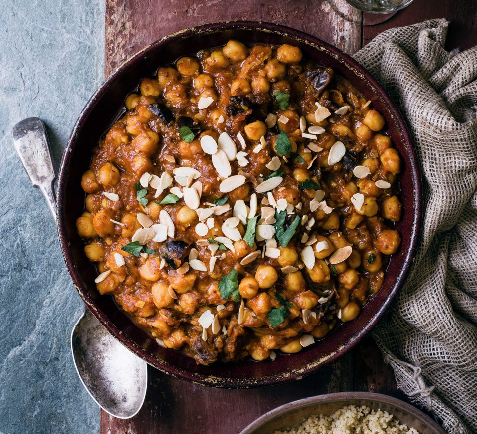

Chickpea Recipe

Description
This recipe is for a natural Chickpea recipe similar to a soup. The recipe includes several vegetables to add
flavour, and you add chickpeas for a declicious seasoned soup!
Ingredients
- Tomatoes (2 small tomatoes)
- One Red Pepper
- One Onion
- Cilantro
- Garlic
- One carrot
- One potato
- Powdered Pepper
- Salt
- Natural tomato souce
- Hot sauce (Optional)
- Jalapeno (Optional)
Steps
- Finely chop the pepper, onion, garlic, and cilantro. Chop the tomatoes, carrot and potato into big chunks.
- Preheat a pot with oil and butter, add the pepper, onion, garlic, and cilantro and let them cook until
golden.
- Add a cup of water, the tomatoes, and the tomato sauce into the pot. Turn the heat up and let the water
boil, and the ingredients mix and soften, creating a broth.
- Once tomatoes are cooked, add more water, and the chickpeas, potatoes, and carrots. Add enough water to
allow the added ingredients to cook.
- Season to taste with ground pepper, salt and ground garlic.
- Once everything is fully cooked, the soup will be ready to serve!
Go back